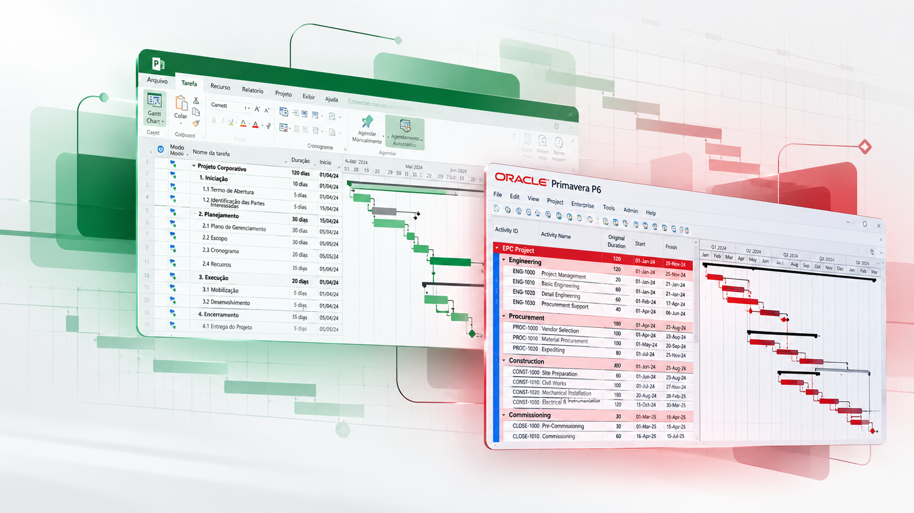
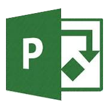

Consultoria Empresarial
Planejamento, estruturação, acompanhamento e controle de cronogramas. Apoio técnico em MS Project e ferramentas de planejamento.
PAVEL CONSULTORIA
Soluções especializadas em planejamento, estruturação, análise e controle de cronogramas para profissionais e empresas.

Treinamentos em MS Project e Primavera P6 • Consultoria Empresarial • Análise Forense de Atrasos • Certificação PMP
01 / ÁREAS DE ATUAÇÃO
Do desenvolvimento de cronogramas à análise técnica de seus impactos.
Planejamento, estruturação, acompanhamento e controle de cronogramas. Apoio técnico em MS Project e ferramentas de planejamento.
Análise técnica de cronogramas, avaliação de atrasos, impactos, consistência e lógica. Suporte a disputas e análises retrospectivas, conforme o escopo de cada trabalho.
MS Project e Primavera P6: conhecimento aplicado ao planejamento e à gestão de cronogramas.
Produto digital próprio da Pavel para preparação para o exame PMP.
02 / CONHECIMENTO APLICADO
Treinamentos especializados em MS Project e Primavera P6.

MS PROJECT8 horas de treinamento, apostila completa, turmas reduzidas e certificado. Possibilidade de aulas individuais ou turmas, conforme programação vigente.
Quero saber mais PRIMAVERA P6
PRIMAVERA P6Treinamento especializado em Primavera P6. Formato, carga horária e programação serão apresentados junto às informações definitivas do treinamento.
Quero saber maisAGENDA DE TREINAMENTOS
Encontre a programação de MS Project e Primavera P6.
Programação pendente.
As datas serão exibidas após confirmação.
03 / TECNOLOGIA PAVEL
Uma solução digital própria para apoiar sua preparação para o exame PMP.
Acessar o SimulatorPlaceholder: link definitivo do produto pendente.
Placeholder · imagem a fornecer
04 / SOBRE A PAVEL
Placeholder editorial: o texto aprovado de apresentação será inserido quando fornecido para este repositório.
Planejamento e Gestão de Cronogramas
05 / VAMOS CONVERSAR
Conte sobre sua necessidade em planejamento, gestão de cronogramas, análise de atrasos ou treinamentos.
Placeholder: número de WhatsApp a fornecer.